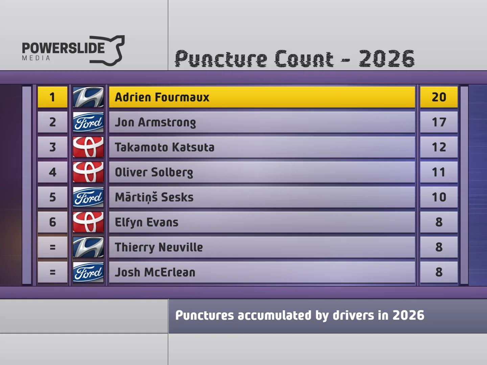
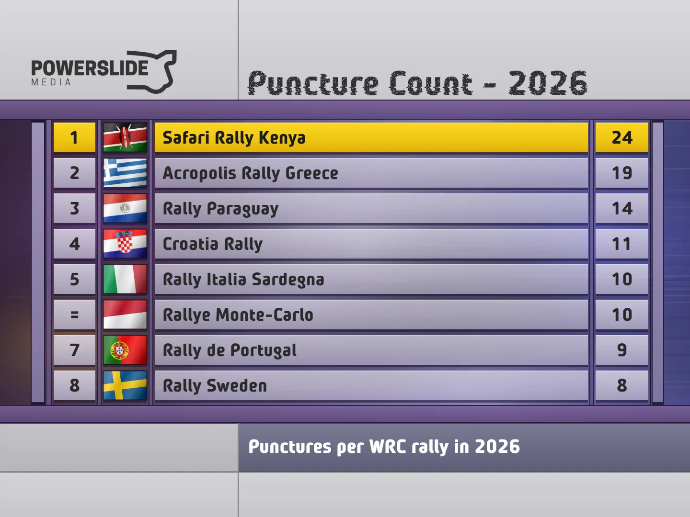

2026: The WRC Season in Numbers
The 2026 WRC season came to an end following the end of Rally Italia Sardegna. The final season of the Rally1 regulations as we know them was a thriller, with the champion being decided on quite literally, the final corner, of the last stage, of the final round of the championship.
Elfyn Evans finally broke his duck to become Britain's third ever WRC driver's champion, winning the title ahead of Oliver Solberg and Sami Pajari. Just like last year, in this post, we will try to find out who's been the fastest driver, who's been the most consistent, and whether some drivers have improved or regressed compared to last year. This year's review will focus on just the end-of-season stats, that you can also find in the Powerslide Stats Database, explaining how these numbers came to be! So let's dive in!
Before we dive in, let's break down how these numbers are determined! There are two key variables: Deficit to Ideal Time (measured in seconds per kilometer) and Percentage of Stages Completed with a Representative Time (expressed as a percentage). The first variable, Deficit to Ideal Time, reflects a driver's speed. It is calculated by comparing the driver's performance to the ideal pace, where the ideal pace is defined as a driver who won all the stages. Essentially, this shows how fast or slow a driver was throughout the season. The second variable, Percentage of Stages Completed with a Representative Time, relates to a driver's reliability. This percentage is based on the number of stages a driver completed within a competitive time relative to the total number of stages in the season, excluding super special stages (SSSs). A non-representative time might occur when a driver faces issues like mechanical problems, punctures, wrong tyre choices, or is simply cruising.
Unrepresentative times were filtered out with this logic: To determine if a time is non-representative, it is compared to times from either the previous run of the stage or times from the same loop. If the time has a deficit of more than 160% of the previous pass or loop average, it is classified as non-representative. If a driver is more than 1s/km slower on average, then that cut off is increased to 200%.
Pace vs Consistency
So lets first start with categorising all drivers in a chart based on their pace, and how many stages they finished with a representative time. The farther to the right a driver is positioned, the faster they are, while the higher they appear on the chart, the more consistent they are. The chart is split into four areas: Fast and Consistent, Fast but Inconsistent, Slow but Consistent and Slow and Inconsistent.
Solberg and Ogier were the quickest
Let’s start with the drivers positioned in the quadrant that establishes them as genuine contenders for rally wins, podiums etc. Oliver Solberg and Sebastien Ogier end the season as the fastest drivers, with an average deficit of 0.23s/km to the ideal pace. Solberg, who competed in his first full season in the top class was, as expected, a massive step-up from his 2022 stint with Hyundai. In 2022, Solberg found himself in the "quadrant of woe", being the driver with the highest s/km deficit, while also being the least consistent among the WRC's top class drivers.
Despite the Swede's many offs through the first half of the season, he still finds himself in the fast and consistent quadrant. That's purely due to the fact that the timing of his DNFs happened to be mostly late in the loop, meaning that Solberg didn't get to miss as many stages.
As for Ogier, the Frenchman failed to defend his title for the first time since the 2022 season. Ogier was on average the 2.45th fastest in the rallies he competed in, very similar to the 2.41 figure from 2025. So he had the speed, but what he lacked more of was consistency compared to last year. The heavy accident in Finland, and the retirement in Paraguay were essentially a tomb stone for the Frenchman's title hopes.
Elfyn Evans' unmatched consistency
Elfyn Evans was this year's champion, and as one could guess before the start of the year, he was the most consistent out of all the drivers to compete in the top-class this season. Evans completed 92% of the season's mileage with a representative stage time. Somehow, this figure was a downgrade compared to Evans' 2025 season, where he completed a staggering 97% of the season with a representative time. This small regression came mostly due to back-to-back retirements in Safari and Croatia.
As for pace, the Welshman was on average the 3.5th fastest car this season, a rank that makes him the driver with the third best average. This was Evans' second best rank in a season through his career, with his best one coming in 2020, where he was the 3.29th fastest on average pace.
Pajari's Big Step-Up
Many were frustrated with Sami Pajari last year, with the Finn taking a cautious approach in his maiden season in the top-class. 2026 was were Pajari blossomed into a star. Three wins in consecutive events, and nine podium finishes, the most by a driver this season. The Toyota driver was able to bounce back after a disastrous Monte-Carlo, to become a real threat to his teammates. His consistency and speed reminded me a lot of Mikko Hirvonen. Will be interesting to see how and if the Finn will be able to use this season as a foundation for something bigger in the future.
Fourmaux's Underrated Campaign
Compared to 2025, Adrien Fourmaux was slower on pace than 2026, but more consistent. So what gives? Well, we must remember that the i20 N Rally1 was severely dogshit on tarmac, effectively inflating every Hyundai driver's average, something that we will also see with Hayden Paddon. What if we only looked at gravel rallies? Well, then Fourmaux becomes the series' second fastest driver for 2026, only behind Sebastien Ogier.
Fourmaux missed out on a maiden win this season, but he could have potentially ended up victorious on three occasions. In Croatia, Fourmaux was faster than eventual winner Takamoto Katsuta, but a mix of punctures and an off on Saturday - his only this season, saw him finish outside the points. In Paraguay, Fourmaux was the outright fastest, but a series of punctures saw him chase Elfyn Evans throughout the rally for 3rd place. Lastly, in Sardinia, all three of Solberg, Neuville and Fourmaux were very close in my pace standings, so who knows what could have happened if it wasn't for punctures or mistakes. It is clear that Fourmaux no longer lacks in pace or more importantly consistency. He just needs a little bit of luck.
Katsuta's Deceiving Season
Takamoto Katsuta in terms of results had a season that can be considered his best ever. The Japanese driver had 2 wins and 4 podiums, and even led the championship at one point. However, if we take a closer look, it is evident that Katsuta didn't get these results through a jump in pace.
The Japanese driver was the 7th fastest driver in Kenya and the equal 6th fastest in Croatia. In the 493 rallies on the lead up to these events that I have stats for, the 6th or 7th fastest driver winning a rally in the WRC has only happened 4 times! It is an absolute statistical anomaly that these events happened back-to-back.
Katsuta's stand-out rally was in Sweden, the rally that has been his fastest in recent time, where he and Evans were pretty close throughout the event. Other than that, I couldn't really see something different compared to the Japanese driver's other campaigns in the top-class. He benefited from misfortunes in some events, while absolutely writing himself off in others by silly mistakes.
But obviously, this shouldn't discredit his victories, a win is a win at the end of the day, and they shouldn't be discarded because someone managed to make it to the finish.
Neuville's Troubles Continue
Thierry Neuville's season was his worst since 2015. The Belgian has not been able to recapture his 2024 championship winning pace, and this year things were even worse. The Belgian was slower than teammate Adrien Fourmaux in 8 out of the season's 13 rallies. Despite that, Neuville was able to secure a win in 2026, that being in Portugal. Amazingly, if things had gone his way, Neuville could have ended the season with as many as four victories. Croatia, Neuville would have won if it wasn't for that meltdown on the rally's Power Stage, and in Acropolis and Sardegna, the Belgian could have won either of the two if it wasn't for punctures or an off.
But nothing can be changed now. Neuville is the only driver in the Fast but Inconsistent camp.
Welcome to the Quadrant of Woe
This season, the slow and inconsistent quadrant is more populated than last season. Just like 2025, all three of M-Sport's entries find themselves in this category. Josh McErlean's season is remarkably similar to his 2025 campaign. The Irishman's stats are almost identical to 2025, both in terms of consistency and pace. At least unlike last season, McErlean was able to secure some points finishes, running into a nice form from Acropolis to Chile. Still, unfortunately he is the slowest driver of 2026.
As for his teammate and fellow Irishman Jon Armstrong, it would have been a better season if he actually finished more rallies! Armstrong's debut season in Rally1 machinery was a difficult one, with the Irishman only securing 4 top 10 finishes in 13 rallies. That's less than WRC2 champion Robert Virves. Still, there was some promise. Armstrong ran in a podium place in Monte-Carlo early on, and secured his maiden stage win in Acropolis. Croatia was however were the M-Sport driver really showed his speed. Despite finishing outside the top-10, Armstrong was the third fastest in terms of pure pace, something which translated into a third place finish in Super Sunday and the Power Stage, M-Sport's only points on Sunday this season, unless you also want to count Matteo Fontana.
For Mārtiņš Sesks, I honestly don't have much to say. This felt like a copy paste of 2025, but with no Saudi heroics. He was generally faster than his teammates, but there were mistakes. I feel like this season didn't help his stock for 2027.
Οnto the other two drivers here: Esapekka Lappi and Dani Sordo.
Both drivers had career lows in terms of average pace rank, with Lappi being on average the 8th fastest car, and Sordo the 9.33th fastest, the equal slowest alongside McErlean. Both failed to showcase any form of good pace in 2026, with Lappi's personal best being 7th best on average pace in Sweden and Sordo's best being 8th in Canarias.
Lappi seemed disinterested, fighting against the M-Sports in Chile, in what was a painful rally for the Finn, while also crashing out from his home rally on SS4. Sordo on the other hand. Honestly I have nothing positive to say, Sardegna could have been good, but the Spaniard seemingly never recovered from his Shakedown off, also going off on Friday afternoon.
Out of the two, Lappi at least was able to secure points finishes in four out of his five starts with the team. Sordo on the other hand will end a season without a podium for the first time in his career.
Paddon's Comeback Year a Positive
Back in 2023, when Powerslide was just getting started, my colleagues and me critiqued Hayden Paddon on the lead up to the ERC season opener, calling him "washed" based on his recent WRC2 results and his time outside the sport since his Hyundai exit in 2018. Two ERC championships later, it was safe to say he proved everyone wrong, prompting me to make a "Hayden Paddon Apology Form" following his win in Fafe that year.
Well, I can't think of a more fitting time to fill that form than now.
Paddon was dealt an unfortunate hand on his top-class comeback, being assigned the role of the team’s designated “tarmac specialist”. His previous highest place finish on this surface was 5th. Still, he was able to score a podium in Croatia, thanks to his teammate's misfortunes. With that, he broke Pentti Airikkala's record for biggest gap between podium finishes.
The Kiwi was given the chance to compete on gravel with the i20 N Rally1 in Paraguay and made the most of it. Paddon finished in 2nd place, even leading the rally on Friday morning, but dropping back after a puncture. And unlike Croatia, it was no fluke, Paddon was just quick on gravel. It will be interesting to see whether he gets another chance at the top-class with Hyundai at whatever form the South Korean manufacturer. I want to believe he has more to show, especially on gravel.
The only reason the Kiwi is on the "Slow but Reliable" quadrant is because of the unique Monte-Carlo conditions, where every driver had a high deficit thanks to the conditions, and because of Hyundai's pace on tarmac compared to the Toyotas. On average, Paddon was the 8th fastest driver in 2026, behind Katsuta and ahead of teammate Esapekka Lappi.
Was Toyota that dominant?
Toyota won a record equaling 12 out of 13 rounds this year. The Japanese manufacturer was faster than Hyundai in all but three rounds: Acropolis, Paraguay and Sardinia. Toyota were even more dominant than this year, but this is only because Hyundai saw its performance regress in 2026. As a result, the Toyota GR Yaris Rally1 is actually the most dominant car to complete in a full season according to my stats, in terms of pace.
What about different surfaces?
Below you can find an interactive table with all surface filters you might need, to explore who was faster where!
Who was more affected by punctures this season?
Adrien Fourmaux picked up 20 punctures in 13 rallies in the 2026 WRC season. Jon Armstrong was second with 17, incredibly picking up 12 in the first four rallies!

As for rallies, the Safari Rally was by far the rally with the most tyre failures, with 24 amongst 10 drivers. The Acropolis rally was in 2nd with 19, with Paraguay having 14, Croatia 11, and Sardegna 10, tied with Monte.

End of Season Statistics
I will leave you all with the detailed s/km stats per driver this season, as well as the wins, podiums and stage wins for each driver this season. Thank you all for the support, and I hope to see you in 2027! Until then, enjoy the off-season, and make sure to check the Powerslide Stats Database for more!


Comments